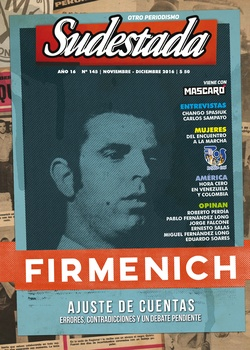

Buscar
Mujeres. Cambiar la historia sin pedir permiso
Espacio unitario de discusión, inédita demostración de fuerza, masiva expresión política y cultural, el Encuentro de Mujeres Rosario 2016 marcó un punto de inflexión en la historia de lucha contra el patriarcado y el machismo. Pero eso no fue todo: un par de semanas después, multitudes de mujeres volvieron a las calles para gritar, una vez más, “Ni una menos”. Crónica de un tiempo de vértigo y de cambio. Algo tiembla en lo más profundo. Algo cruje en nuestro país. Y, ahora, las protagonistas somos las mujeres.
Edición N° 145
Noviembre-diciembre 2016
Revista bimensual
Comprar edición impresaSumario
- Firmenich. Ajuste de cuentas
- Algo hace ruido desde abajo
- Mujeres. Cambiar la historia sin pedir permiso
- Tres corazones en Villa Itatí
- Un sueño con Luis María
- Chango Spasiuk: "A veces cuando toco, puedo sentir como cuando era niño"
- Carlos Sampayo. "Este país se fue muchas veces a la mierda pero esta vez es muy peligroso"
- Venezuela. Entre el abismo y la esperanza
- Colombia. La paz del modelo extractivista
- Ser prisionero político palestino en Israel
- Excluidos
Compartir Articulo
La entrada de la Facultad está llena de mujeres. Amontonadas en la puerta, están apuradas, preguntan, van y vienen, cortan el tiempo, buscan en algún kiosco cercano el agua caliente que les garantice el mate que compartirán durante las próximas horas. Adentro, el aula está repleta. Las sillas no alcanzan, así que las más jóvenes se acomodan en el piso y otras quedan paradas. Las más obstinadas no se resignan a rumbear hacia otro taller y comienzan a organizarse en los pasillos. Son las que terminarán armando una nueva comisión. Todas esperan ansiosas el inicio de las discusiones. Todas tienen algo para decir. Se suceden las intervenciones. Surgen reclamos, reivindicaciones, críticas, pero también emociones.
Una joven colombiana pide la palabra. Es su primera participación en un Encuentro Nacional de Mujeres. Habla sobre su pueblo, sobre cómo la violencia de género es un drama cotidiano, sobre el dolor de esas mujeres y sobre la impunidad que gozan los violentos porque el Estado mira hacia otro lado. Cuenta lo que le genera estar ahí y escuchar a tantas valientes que luchan y se le paran de manos al patriarcado. Describe la emoción que le despierta ver que somos tantas, percibir la potencia arrasadora de las mujeres. Y, de pronto, no puede seguir hablando. La emoción le hace un nudo en la garganta y todo se transforma en lágrimas. Intenta retomar el hilo de su alocución, pero las lágrimas la traicionan otra vez. Es tanto lo que hay para hacer en su pueblo, es tan esperanzador lo que ve en ese, nuestro, espacio de Encuentro. Ante la dificultad para seguir hablando, se generó un respetuoso silencio. Que se tome su tiempo, dicen algunas. Lo importante es que pueda ser la voz de aquellas que nunca son escuchadas, coinciden todas. Pero ella no puede seguir. Entonces, el silencio se rompe con un aplauso cerrado. Como si en ese gesto, todas las presentes pudieran ofrendarle un cálido abrazo. Como si pudieran de ese modo darle la fuerza para continuar. Ahora sí, habla de la fuerza y la energía que se lleva de ese espacio y cómo se permite soñar con replicar esta experiencia en Colombia y, por qué no, en toda América Latina.
En el Encuentro Nacional de Mujeres, todas las voces son necesarias. Porque el cambio empieza allí, en cada mujer que se acerca por primera vez, tal vez empujada por la curiosidad. Es que algo cambia en cada mujer que participa, así dice el lema del Encuentro y bastante de cierto tiene si pensamos que todas descubren allí que tienen experiencias para compartir y conocimientos de sobra respecto de la opresión machista. No necesitan aprender; pueden enseñar. Saben de exclusión, saben de peleas cotidianas, saben de criar pibes sin dejar de ser mujeres rebeldes.
Como cada año, el Encuentro supera sus propias expectativas y va creciendo en cantidad de participantes y en profundidad en los debates que se dan en los talleres. Como cada año, hay escenas que se repiten. Se esperaba la llegada de alrededor de 70 mil mujeres al Encuentro Nacional, esta vez, el XXI, en Rosario. Más de 140 escuelas fueron el alojamiento para las visitantes que, durante tres días, coparon la ciudad.
***
Es viernes. Arriba de la mesa, una mochila abierta. Un rápido repaso de lo necesario: la bolsa de dormir, el aislante, equipo de mate, los pañales del nene, un par de remeras. No mucho más. Esto ocurre en miles y miles de hogares al mismo tiempo. Son las mujeres, que aprontan el equipaje y el alma para el Encuentro. Lo cotidiano, el trabajo, la casa, los hijos, el barrio, todo queda en un segundo plano, todo se pospone para la vuelta. Ahora, el tiempo es nuestro.
Después, será encontrarse al pie del micro, compartir mates entre risas y comentarios. El viaje servirá para improvisar canciones, practicar nuevas consignas, pintar remeras con frases feministas; será tiempo de repasar a cuántos Encuentros asistió cada una; leer el listado de los 69 talleres para ver qué se elige; charlar con la doña del barrio que, esta vez, viene con su hija. Son las Mujeres. Niñas, jóvenes, viejas, madres, putas, travas, tortas, todas. Son las mujeres que, entusiastas, hacen largas filas para acreditarse y hacerse de las conclusiones del Encuentro del año anterior; mujeres que despliegan sus banderas de organizaciones políticas, sociales, barriales, sindicales, vecinales; mujeres trabajadoras, educadoras, de pueblos originarios, feministas, villeras, abortistas, desocupadas; mujeres que se juntan, una vez más, para cuestionar esta sociedad patriarcal y opresora; que vuelcan sus experiencias de lucha y de rebeldía.
***
Es sábado. La Plaza San Martín está repleta de mujeres que apuran el último bocado de un sánguche y chusmean los puestos de artesanías antes de acudir a los talleres, que se desarrollan en las escuelas vecinas. Miles que van y vienen, perdidas en la ciudad, con sus típicos pañuelos verdes de la Campaña Nacional por el Derecho al Aborto Legal, Seguro y Gratuito, con sus termos bajo el brazo, con el mapa que no termina nunca de entenderse. En los pasillos de las escuelas, se hace difícil elegir cuando las temáticas son tan variadas: Mujeres y cannabis; Mujeres y Educación Sexual Integral; Mujeres y activismo lésbico; Mujeres Afrodescendientes; Mujeres Campesinas y Rurales; Mujeres y Derechos Humanos; Violencia, Abuso y Acoso Sexual; Mujeres, Anticoncepción y Aborto y tantos otros. Temáticas que atraviesan la realidad de todas, que las interpelan y las invitan a dar su testimonio y a hacer escuchar su voz. Porque el Encuentro es, justamente eso: un espacio de reunión y allí las mujeres quieren oír y ser oídas...
Fotos: Fabiana Montenegro
(La nota completa en la edición gráfica de Revista Sudestada)
Comentarios
Vanesa Jalil
Articulos más vistos


LIBRERÍA SUDESTADA

Colección infantil

Distribuidora de Libros

Suscripción

Sudestada en URUGUAY

Otros articulos de esta edición
Un sueño con Luis María
El Indio Solari lo menciona en dos canciones, pero la historia del músico platense Luis María Canosa sigue hasta hoy ...
Chango Spasiuk: "A veces cuando toco, puedo sentir como cuando era niño"
Como un ritual pagano, cada vez que Chango Spasiuk edita un nuevo disco, el encuentro con Sudestada se hace inevitable. ...
Tres corazones en Villa Itatí
Un barrio siempre es la historia de su gente. Por esa razón, la historia de Villa Itatí parece marcada por ...
Firmenich. Ajuste de cuentas
No hay otro personaje político argentino que cargue con su estigma. Todo es sombra, mugre, historia turbia a su alrededor. ...
Carlos Sampayo. "Este país se fue muchas veces a la mierda pero esta vez es muy peligroso"
Reconocido por su trabajo como guionista de historietas de la talla de Alack Sinner (en dupla con José Muñoz), la ...
Excluidos
Hago una lista: negro, indio, inmigrante, anarquista, comunista, judío, cabecita negra, hippie, subversivo, gay, travesti. Más de cien años de ...